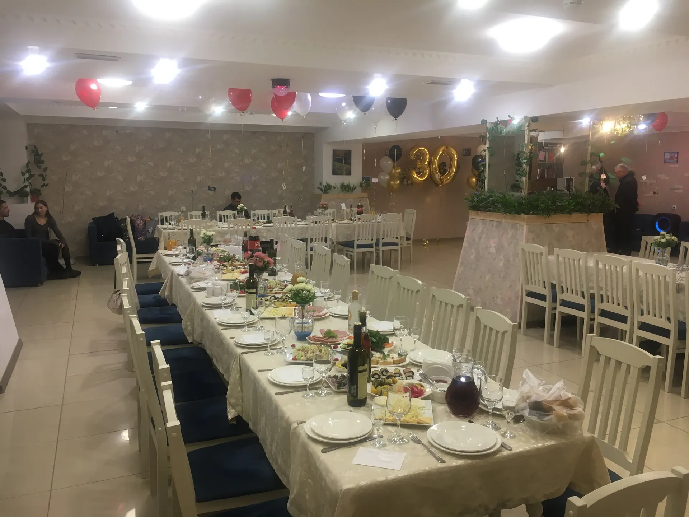
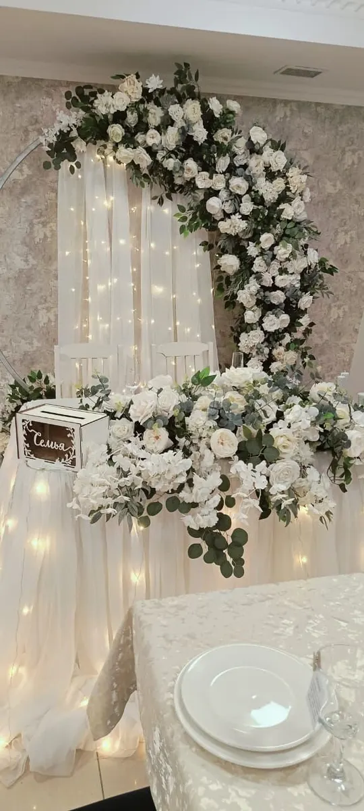
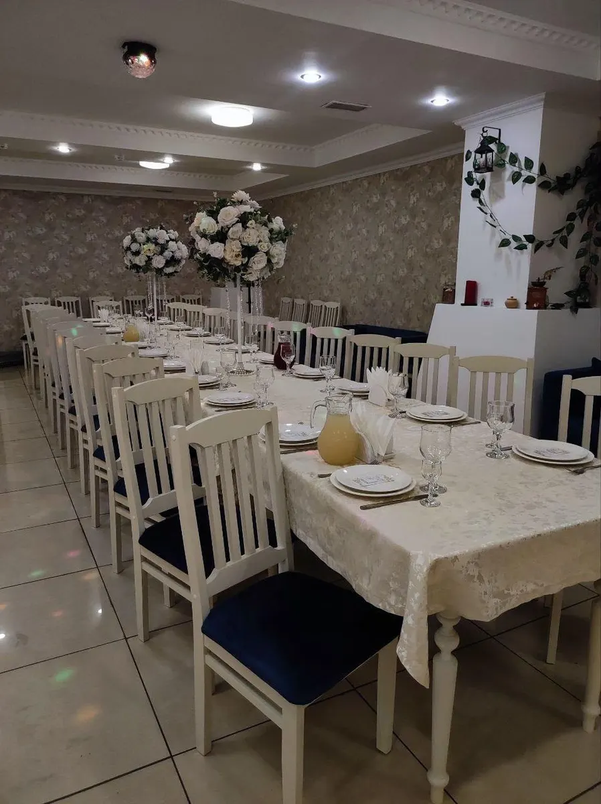
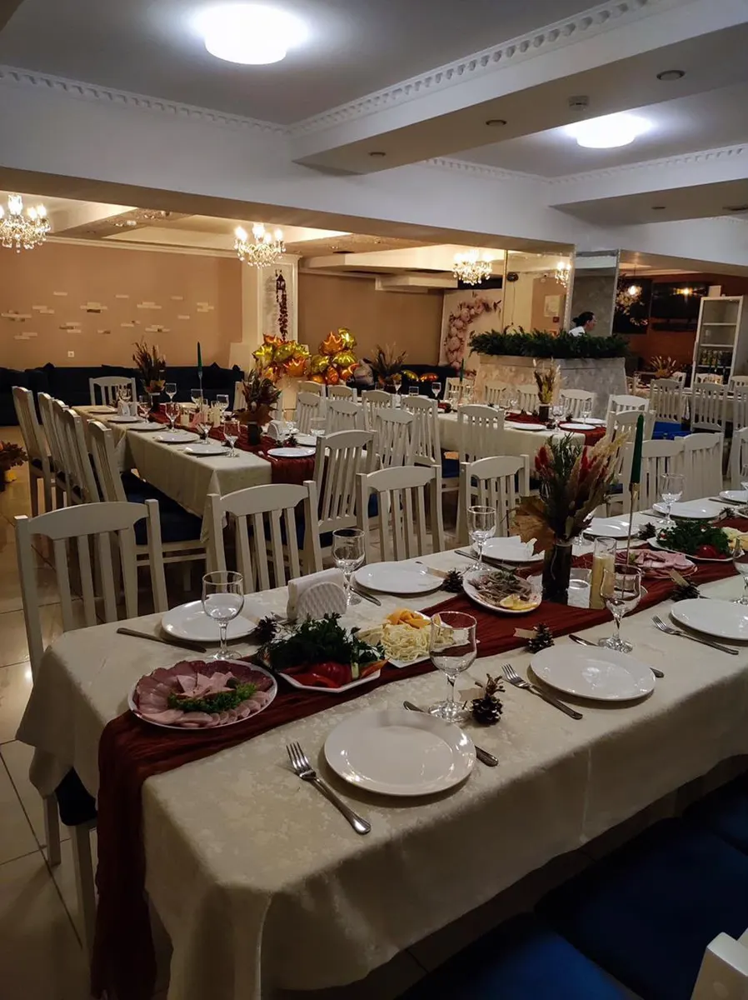

Банкетный зал · Краснодар
Банкетный зал в центре Краснодара: заявка на дату
Выберите формат, день и время - чат откроется с готовым текстом. Свадьбы, юбилеи, дни рождения и детские праздники.
- Ежедневно с 12:00 до 23:00
- Рейтинг 4,8, 37 оценок
- Банкеты на 25-60 гостей, по отзывам клиентов

Что есть в зале
Входит
- Банкетное меню: клиенты хвалят вкус и подачу
- Официанты на банкете
- Танцпол и место для фотозоны
- Колонка, микрофон и экран
- Диваны по периметру зала
Отдельно, если нужно
- Оформление зала: владелец советует оформителя
- Ведущий и певица для праздника
- Комплимент от заведения
Форматы мероприятий
На карточке на Яндекс.Картах прайса нет, поэтому на демо цены стоят «уточнить». Здесь удобно показать меню и пакеты до звонка.
Мероприятия
- Банкетклиенты пишут про банкеты на 25 и 60 гостейуточнить
- Свадьбаклиенты празднуют здесь свадьбыуточнить
- Юбилей и день рожденияклиенты пишут про юбилеи и дни рожденияуточнить
- Детский праздникклиент пишет про банкет на рождение ребёнкауточнить
Перечень составлен по отзывам клиентов, прайса на карточке нет. Меню и условия уточняйте у администратора.
Как оставить заявку
- 01
Выберите формат, день и время
В блоке заявки вверху страницы.
- 02
Нажмите «Оставить заявку»
Откроется чат с готовым сообщением - останется его отправить.
- 03
Дождитесь ответа администратора
Он уточнит число гостей и повод и подтвердит дату.



Что говорят клиенты
Вкусная кухня
Клиенты пишут про вкусные блюда, авторскую подачу и большие порции.
Внимательное обслуживание
Гости благодарят официантов и хозяина за личный контроль праздника.
Удобное расположение
Клиенты отмечают центр города и удобную дорогу на машине и транспорте.
Приемлемые цены
Клиенты называют цены приемлемыми и демократичными.
Отзывы с Яндекс.Карт
«Отлично провели банкет на 25 человек! Всё было на высоте: качественные продукты, вкуснейшие блюда и приятный бонус в виде комплимента от заведения. Чистота, внимательная официантка и личный контроль со стороны хозяина сделали вечер по-настоящему комфортным. Однозначно рекомендую!»
Ааа Ш. · 22 ноября 2025
«Заказали на 60 человек банкет. Было всё идеально. Все гости ушли довольны. Еда очень вкусная, подача прям авторская. Цены приемлемые. Обслуживание высокая. Спасибо огромная. Рекомендую всем»
Лилия Лилюша · 6 декабря 2025
«Праздновали в зале свадьбу 20.01.2026. Все очень понравилось, меню превосходное, все вкусно, количеством порций были очень удивлены. Огромное спасибо хочу сказать Тиграну за такое трепетное отношение к каждому гостю, и за организацию.»
Кристина Тургунова · 24 января 2026
Отзывы с карточки на Яндекс.Картах, без правок.
Частые вопросы
Где находится зал?
Краснодар, Севастопольская улица, 2/5, цокольный этаж, почти в центре города.
Как оставить заявку?
Выберите формат, день и время в блоке заявки вверху страницы - откроется чат с готовым сообщением. Можно позвонить: +7 (918) 255-17-85.
На сколько гостей можно заказать банкет?
Клиенты в отзывах пишут про банкеты на 25, 30 и 60 гостей. Точную вместимость уточняйте у администратора.
Какие мероприятия проходят в зале?
По отзывам клиентов: свадьбы, юбилеи, дни рождения, детский праздник и банкеты в компании.
Есть ли звук и экран?
Клиенты пишут про колонку с хорошим звуком, микрофон и экран. Музыку можно включать с телефона или флешки.
Можно ли потанцевать?
Да, клиенты отмечают место для танцев и для фотозоны.
Какое меню?
По отзывам, большой выбор: от недорогих блюд до премиальных. Актуальное меню и цены уточняйте у администратора.
В какие часы вы работаете?
Ежедневно с 12:00 до 23:00.
Оставить заявку на банкет в «Огоньке»
- Адрес
- Севастопольская улица, 2/5, Краснодар
- Часы
- Ежедневно 12:00-23:00
- Телефон
- +7 (918) 255-17-85